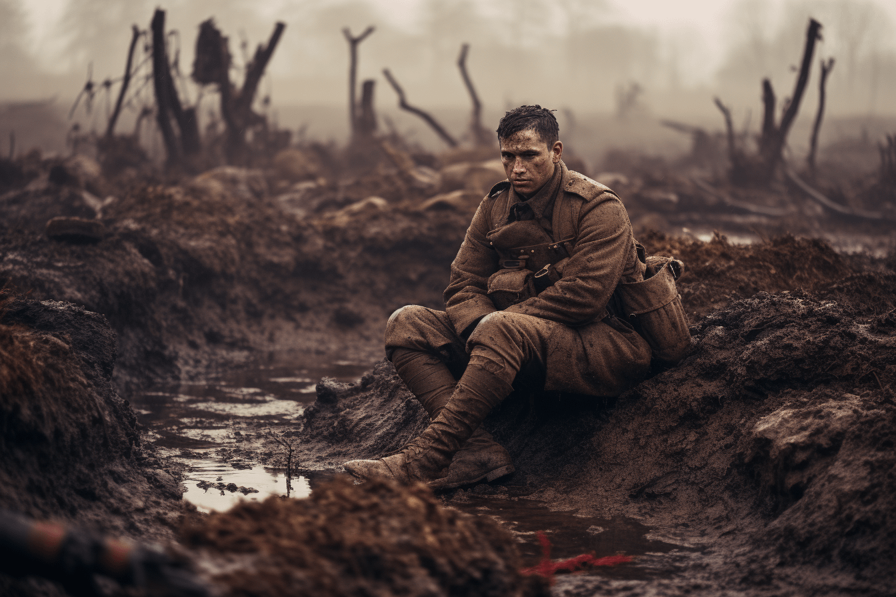
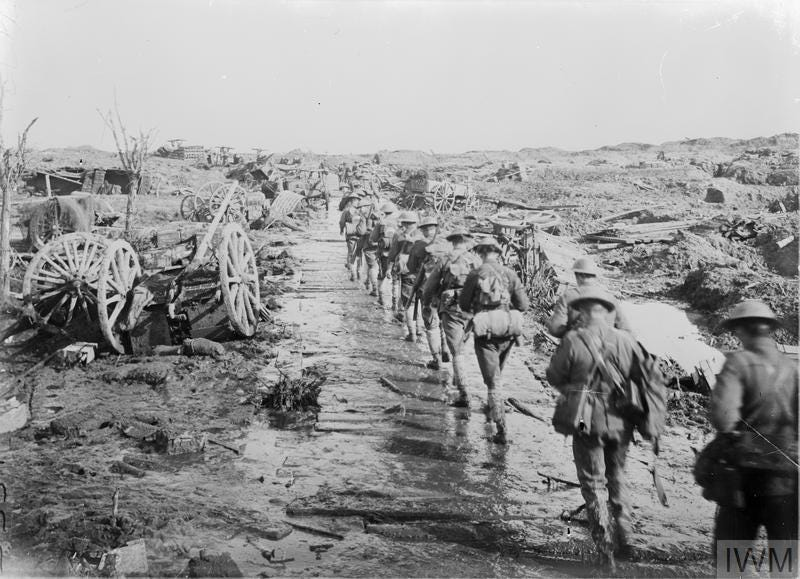
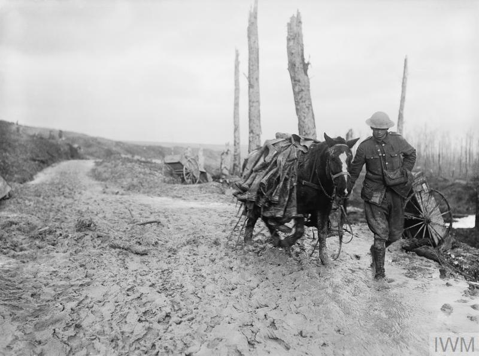

Mud is a recurring image in TheThings They Carried, occurring at points in the text pivotal to the war, which seems unable to be won and is utterly devastating in its destruction. Every time I think about mud, I associate it with trap, devour, Soldiers slosh through it; they never get to run or hurry.
The most striking image of mud perhaps occurs in the death of Kiowa in the "shit field." In the chapter Field Trip, the field where Kiowa dies becomes a symbol of the devastation and futility of war.
"This field had embodied all the waste that was Vietnam, all the vulgarity and horror."(176) 
In this part of the chapter, the reader is able to appreciate the other negative effects of the battlefield on soldiers, not only physically but also emotionally. The killing field where Kiowa rests his head represents the land mass where multiple bloodsheds occurred during the war, which is not the case because the land belongs to Kiowa. When O'Brien describes the field as a wasteland in Vietnam, he in turn reveals to the reader how unwinnable battles destroy a soldier like Kiowa. This moment brings out the difficult issues in the book, as the questioning of such actions is very much the reality for soldiers for whom the word "permanent" has now become a reference to the most destructive act of life, war. This makes the issue of despair clear in the novel as war destroys people with absolutely nothing.
In the "In the Field" chapter, a platoon of eighteen soldiers formed into a loose line and began wading side by side through the deep mud of the dirt field.
"The rains had fallen without stop, and the Song Tra Bong had overflowed its banks, and the muck had now risen thigh-deep in the field along the river". (155) 
This moment in the novel pays special attention to the theme of the soldiers suffering not only physically, but also mentally, because of the war. The mud here is holding them back; it depicts how the war is trying to swallow them up, both literally and emotionally. This imagery and the mud in the novel clearly show how their trauma has become intense, suffocating, and a constant shadow everywhere. They are trapped in a muddy neighborhood as these soldiers are because of the images of horror they have witnessed. As for the rest of the scene, it explains how the emotional burden of guilt and loss that the soldiers carry physically develops, which adds to the aura of the chapter. It reinforces the theme of "the things they carry" during war, which is depicted as a monster that will never leave you, even when you are lying in a coffin.
"In The Things They Carried" chapter, the landscape of Vietnam becomes a constant and oppressive presence for the soldiers.
"They carried the land itself—Vietnam, the place, the soil… the stink of decay."(14) 
At this moment, it becomes clear how the soldiers are not only mentally exhausted by the fatigue of their equipment, but also physically exhausted by the place they are in. The ground, with its brutally scorching sun, thick mud, and man-made destruction, begins to symbolize the impact that war has on people and soldiers. It becomes a reality that the soldiers are not only bearing the weight of their equipment, but also the weight of memories within them, of trauma and the sight of dead bodies everywhere. This connection between life, land, and the lives of the soldiers helps to portray a sense of claustrophobia where the walls of war can be felt and their effects on every level, including the physical and psychological. At this moment, the mud and the atrocities committed in this place reinforce the narrative of how the soldiers have completely lost touch with their emotions, making every small aspect of life feel overwhelming without any form of relief or comfort.
The mud and the rivers symbolize entrapment, the unshed load of war. They may not be the only obstacles in the way of soldiers, but they hint at how war controls their lives, feelings, and even their futures. The mud pulls them down into the mire of guilt and grief, both physically and mentally.
I feel that Tim O'Brien uses the mud to convey how war engulfs everything coming its way. It gets the soldiers caught up in a never-ending circle of violence and loss, and when they seemingly come out, the memories cling on, much like the mud clings to their boots. The imagery is assaulting-in a manner-of-the readers, placing us into this view of how war takes away clarity, takes away hope, and even takes away humanity.
It thus becomes a strong critique of war because all participants are seen to sink at the end.